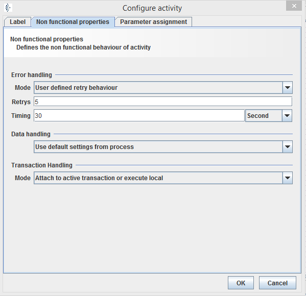

Activities

Topic content
Concept
Activities define the communication points during the process with specific channels. Orchestra works with channels to open access points to other systems. They import or export the data into Orchestra. In process model it must be declared at which point of flow the necessary data should be imported or exported. Therefore activities are defined. An activity declares the parameters and properties of a channel call. The have certain variables, depending of a inbound or outbound channel. Activities can be compared to get or set function calls. Optionally they commit parameter or receive results from the "function". Channels are in this case the content of functions.
There are 3 Types of activities:
•Import activities: The system has to wait, until an inbound channel provides certain data to start or continue the process. The activity Receive waits for incoming data for further actions.
•Export activities: This activities initiate a data output. The activities Call, Send and Response give data or commands to channels, which export the data.
•Script activities: This activities does not communicate via channels with external systems but transforms data with given scripts.
Common configurations
To open configuration view of an activity double click on the icon. A window with several tabs will be opened.
Label
Configure label of the activity.
Nonfunctional properties

Select whether to use the default or a user defined behavior. As default Orchestra tries 5 times to fetch or send data from/to an external system, with a waiting time of 30 seconds. You can also choose, if the data handling should be targeted:
oUse default settings from process: In the properties of a process model is also a selection field for data handling.
oOptimize for small/normal message size: Incoming message get completely loaded to internal memory.
oOptimize for mass data: Incoming messages do not get loaded to internal memory because of their big size.
The is only enabled for send and call. You can choose "Attach to active transaction or execute local" or just "execute local mode".
For further information about transactions see here.